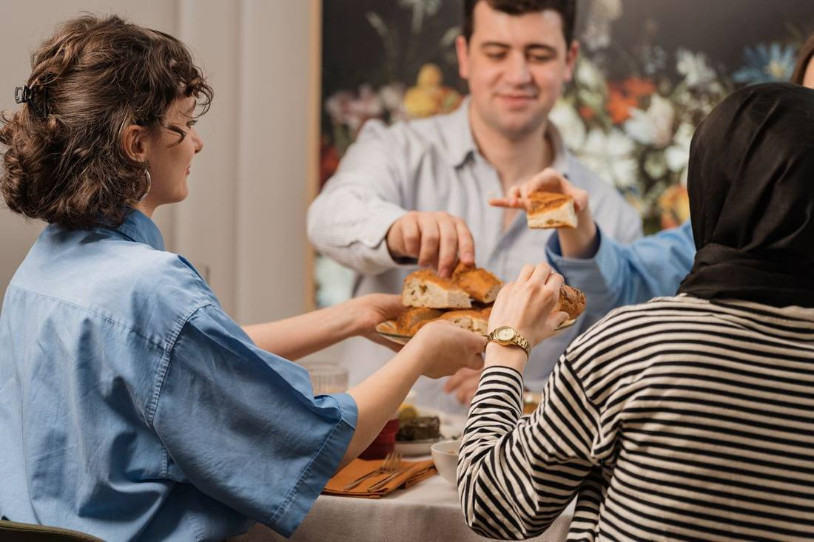
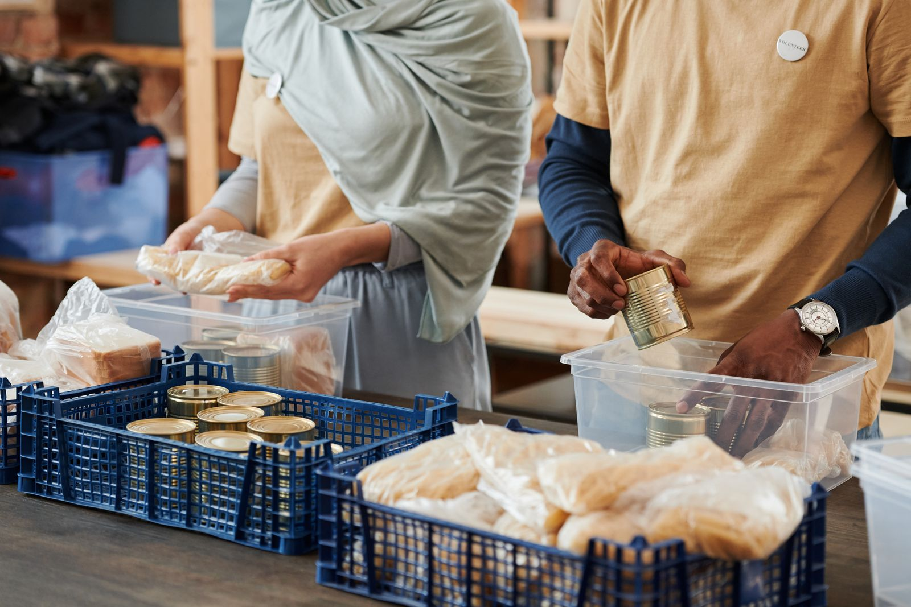
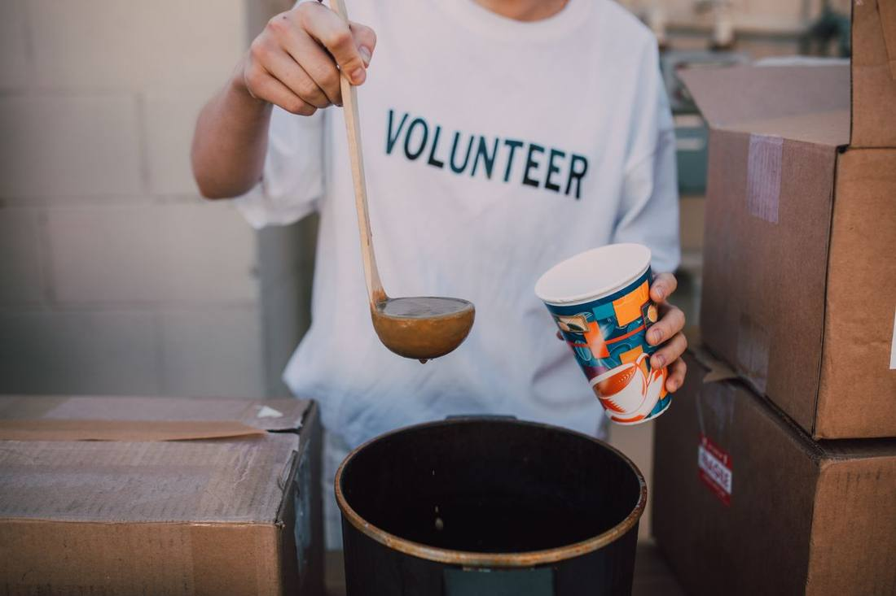
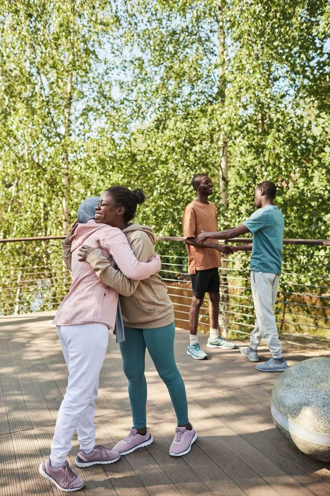
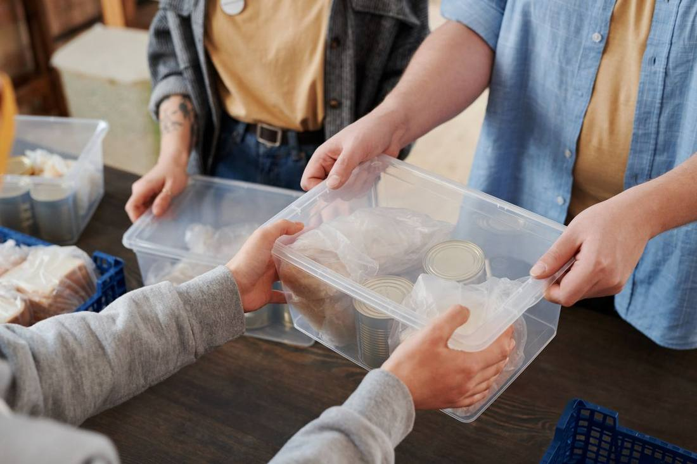
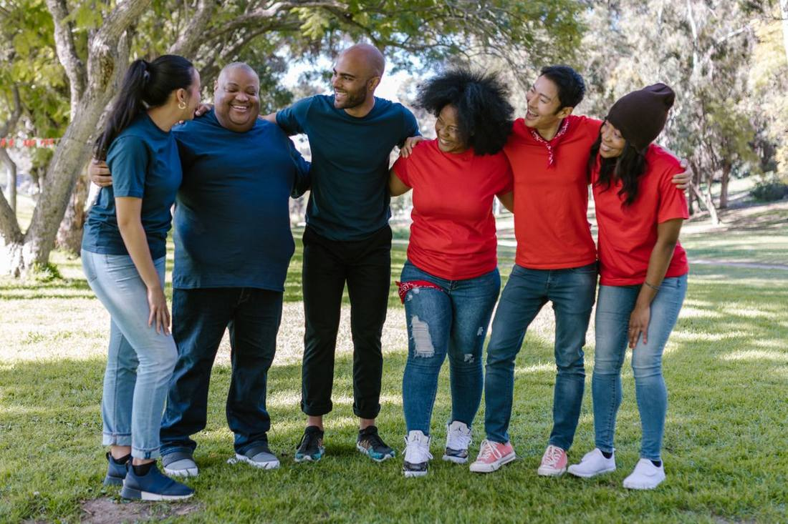
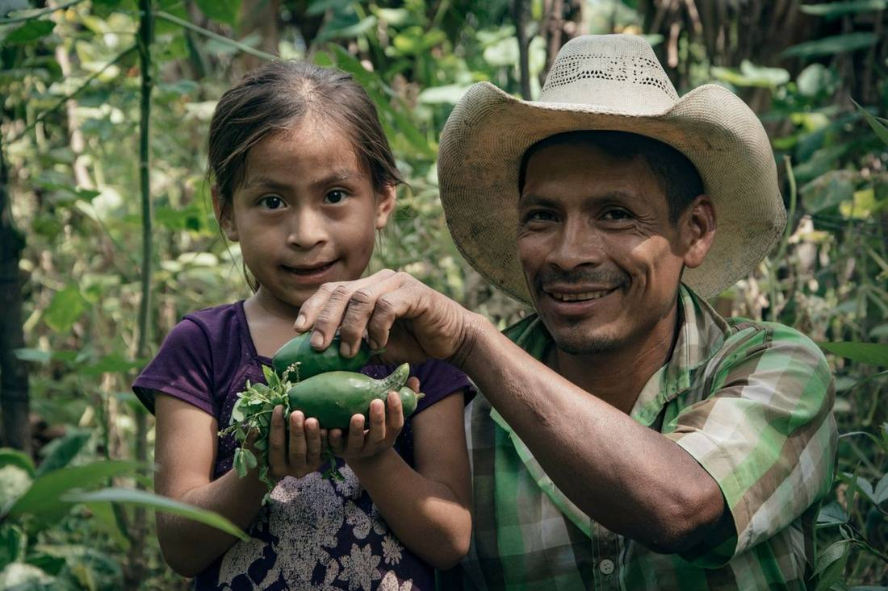
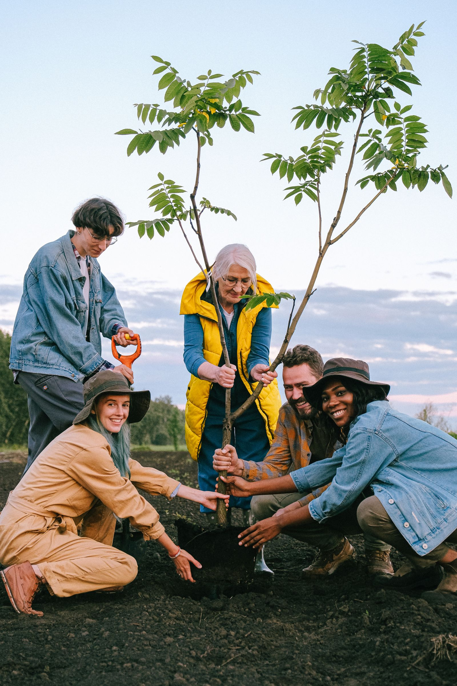
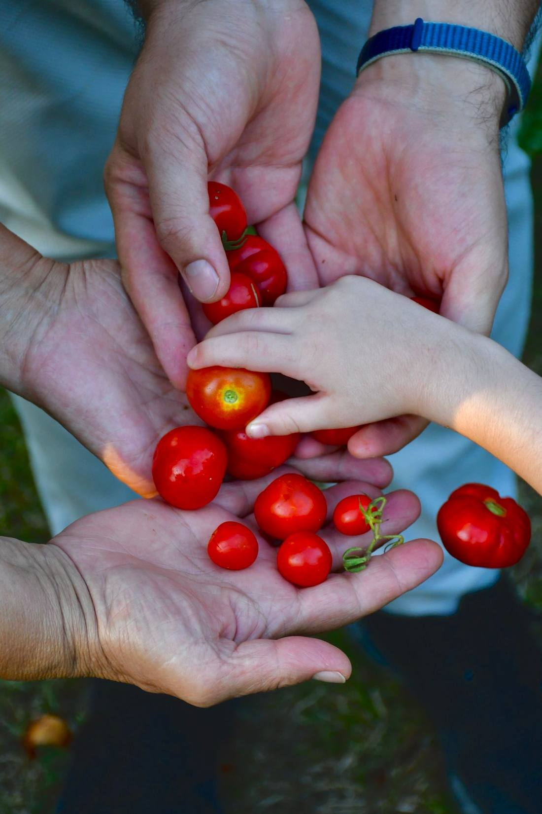
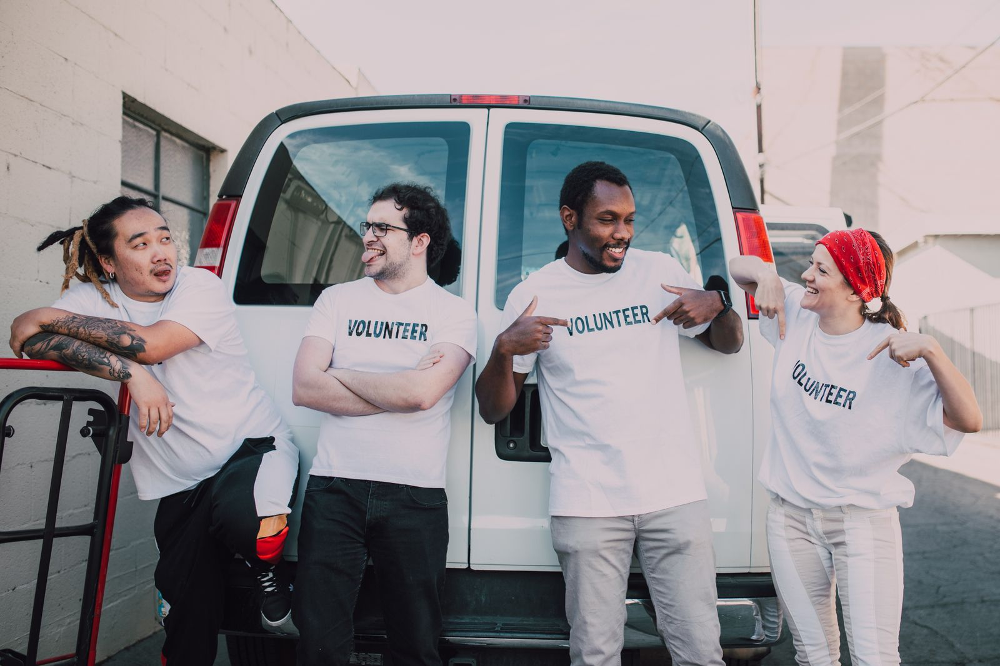

Gallery
This is what a neighborhood looks like.
Meals shared, furniture delivered, teens learning, gardens growing, neighbors showing up for one another. A glimpse of everyday life at TAUM.
 Our home & mural on Second Street
Our home & mural on Second Street
Everyone's welcome at the table
Stocking the food program
Hot meals, served with care
Neighbors, togetherA fresh start, furnished

No questions askedTech for Teens in action

The people who make it happen
From our garden to the tableReal skills, real paychecks
Nobody faces it alone

Growing and serving Founded together, open to all
Founded together, open to allMLK scholars, off to college

Fresh food for the fridge
Strong backs, big heartsCare on campus at Sage
Investing in the dream
Have a photo to share?
We love celebrating our community. If you've got a photo from a TAUM event, meal, or workday (or you'd like to help document what happens here), reach out to lmalatesta@taum.org.